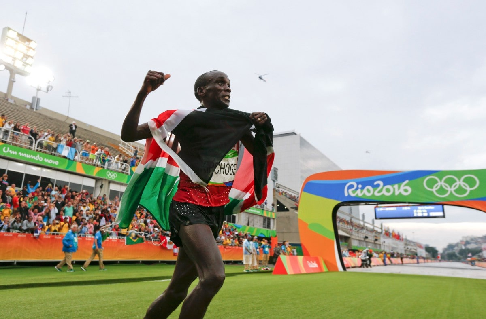

<!DOCTYPE html>
<html lang="es"></html>
<head>
  <meta charset="utf-8">
  <meta name="viewport" content="width= device-width, initial-scale=1">
  <meta http-equiv="X-UA-Compatible" content="IE=edge,chrome=1">
  <meta name="HandheldFriendly" content="true"/>
  <meta name="MobileOptimized" content="320"/>
  <meta name="theme-color" content="#0096D9"/>
  <meta name="msapplication-TileColor" content="#0096D9"/>
  <meta name="msapplication-TileImage" content="./img/marathons-logo.svg"/>
  <meta name="apple-mobile-web-app-capable" content="yes"/>
  <meta name="apple-mobile-web-app-status-bar-style" content="default"/>
  <link rel="apple-touch-startup-image" href="./img/marathons-logo.svg"/>
  <link rel="icon" type="image/x-icon" href="./img/favicon.ico"/>
  <link rel="icon" type="image/png" href="./img/marathons-logo.png"/>
  <link rel="apple-touch-icon" href="./img/marathons-logo.svg"/>
  <link rel="author" type="text/plain" href="./humans.txt"/>
  <link rel="sitemap" type="application/xml" title="Sitemap" href="./sitemap.xml"/>
  <title>El hombre más rápido vivo - M A R A T Ó N</title>
  <meta name="description" content="Conoce al hombre más rápido vivo de todos los tiempos.">
  <meta name="application-name" content="El hombre más rápido vivo - M A R A T Ó N">
  <link rel="stylesheet" href="./style.css">
</head>
<body>
  <header class="Header">
    <section class="Header-container">
      <h1 class="Logo"><a class="Logo-link" href="./">Maratones</a></h1><a class="Panel-button" href="#">
        <button class="hamburger hamburger--spring" type="button"><span class="hamburger-box"><span class="hamburger-inner"></span></span></button></a>
      <aside class="Panel">
        <nav class="Menu">
          <ul class="Menu-listItem">
            <li class="Menu-item"><a class="Menu-link" href="index.html">Inicio</a></li>
            <li class="Menu-item"><a class="Menu-link" href="acerca.html">Acerca</a></li>
            <li class="Menu-item"><a class="Menu-link" href="maratones.html">Maratones</a></li>
            <li class="Menu-item"><a class="Menu-link" href="mujeres.html">Mujeres</a></li>
            <li class="Menu-item"><a class="Menu-link" href="el-mas-veloz.html">El mas Veloz</a></li>
            <li class="Menu-item"><a class="Menu-link" href="contacto.html">Contacto</a></li>
          </ul>
        </nav>
      </aside>
    </section>
  </header>
  <main class="FastestMan">
    <article class="Poster u-firstContent" style="background-image: url(./img/el-mas-veloz-header.jpg);">
      <div class="Poster--opacity">
        <h2 class="Poster-title"><span>EL HOMBRE</span><br/><span>MÁS RÁPIDO VIVO</span></h2>
      </div>
    </article>
    <article class="Collage2 u-firstContent">
      <h2 class="Collage2-title u-flexCenter">Eliud<br>Kipchoge</h2>
      <div class="Collage2-textTop u-flexCenter">
        <p>No, no es Flash, tampoco Usain Bolt, él es un <b>Velocista</b>, especialista en <b>cortas distancias</b> en el <b>menor tiempo</b> posible; pero para ser el más rápido se requiere <b>resistencia</b> y <b>velocidad constante</b> en <b>largas distancias</b> que sólo un <b>Fondista</b> puede lograr.</p>
      </div>
      <div class="Collage2-textRight u-flexCenter">
        <p>Por naturaleza el ser humano es un <b>corredor de fondo</b>, la manera en que cazaban nuestros ancestros era persiguiendo a la presa hasta matarla de cansancio.</p>
        <p>En los último años los maratonistas profesionales se han obsesionado por reducir el tiempo de la maratón a <b>menos de 2 horas</b>.</p>
        <p>El <b>6 de mayo de 2017</b> el keniata <b>Eluid Kipchoge</b> en complicidad con <b>Nike</b>, realizo un experimento llamado <b>Breaking 2</b>, con el objetivo de lograr la hazaña.</p>
      </div>
      <div class="Collage2-textBottom u-flexCenter">
        <p>El evento se realizo en el autódromo de Monza, en Italia. Kipchogue corrió la distancia de <b>42.195km</b> en <b>2:00:25</b>hrs. Aunque le faltaron 26 segundos y el evento no fue oficial, esta hazaña lo convierte en el hombre más rápido vivo.</p>
      </div>
      <div class="Collage2-imageLeft"></div>
      <div class="Collage2-imageCenterUp">
        <article class="Youtube" id="T_W0blad4lc">
          <div class="Youtube-wrapper"></div>
        </article>
      </div>
      <div class="Collage2-imageCenterDown"></div>
    </article>
  </main>
  <script src="./script.js"></script>
</body>